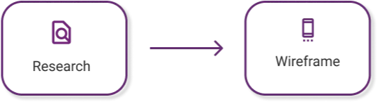
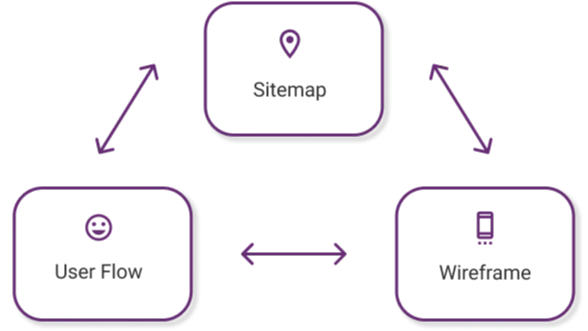
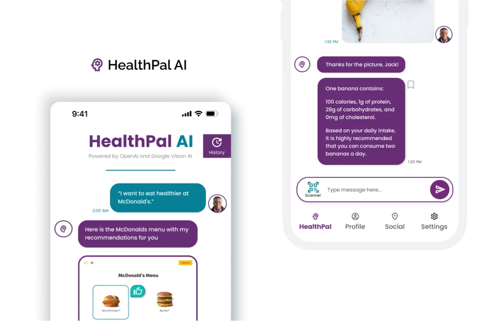

An AI-powered App that empowers IPG Health Client’s patients in embracing a healthier lifestyle
User
Patients with High Cholesterol
Time
3 Months
Tools
Figma, Adobe XD
My Focus
Wireframing Information Architecture
Overview
During my Summer 2023 IPG Health Internship, I pitched a digital advertising experience to executives and clients with a cross-functional team of 12 members, and my team won the Pitch Project.
This project reflects on a zigzag design process for creative AI solutions to attract more targeted patients with high cholesterol to a client’s product and promote healthy lifestyles.
My role was a UX designer, collaborating closely with a brand designer, a developer, a project manager, and a strategist.
My work is currently under NDA, but please feel free to reach out!
Reflecting on my UX design experience...
Jumping directly to wireframe was challenging
With desk research, my team swiftly started building the app wireframes without ideation due to time constraints. However, I found it difficult to craft a user experience without a clear structure or a general understanding of the overall flow.

As I learned to create sitemaps from practicing exercises I did for public websites (figure below), I began to make sense of our project's logic and information architecture
AHA! moment: Sitemap + User Flow + Wireframes are interconnected
Now that I know HOW to create sitemaps, I had a challenge understanding WHEN to use them in my design process. The AHA moment came when I needed to map specific screen interactions.

I realized using a user flow helped me empathize with users and inform my design thinking and the sitemaps, user flows, and wireframes were all INTERCONNECTED in the design process.
Surface of UX design
After figuring out the structure and skeleton of UX design, my zigzag design path arrived at a surface level with design decisions of fonts and color palette based on branding and websites.

We WON!
In the end, my team won the pitch and received high praise and positive feedback for our creative solutions and presentation from Dana Maiman (CEO of IPG Health), Tim Hawkey (Chief Creative Officer).
“There are so many apps … why a new app? The utilization of AI and personal food selection is what makes it different”
Dana Maiman (CEO of IPG Health)
Reflections
Design process is never linear - it’s zigzag!
Be ready to make U-turns and detours in the design journey
Sitemap + User flows + Wireframes are interconnected
Knowing WHEN and WHY to use design tools is vital, not just HOW to create them
Explore competitive audits of other products
Collaborate with a strategist next time to gain a deeper market understanding
Accessible AR Glasses
Smart AR glasses experience for the hard-of-hearing to engage in social interactions